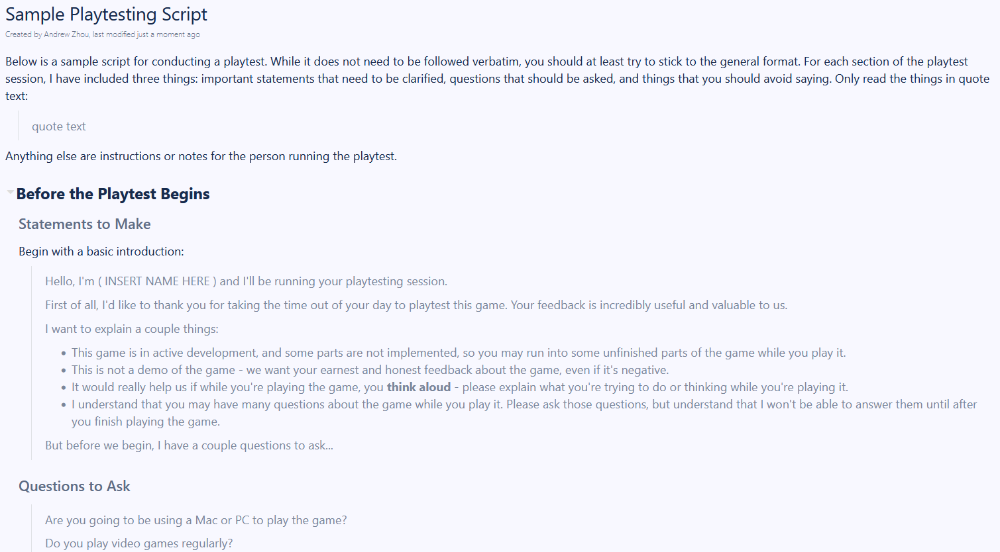

Pre-Alpha 2
Oct 18 to Oct 31 - UI Work, UI Work, and More UI Work
For these two weeks, my primary tasks were concerned with the user interface of the game - updating the look of the game from that of a rapidly slapped together project to something more sleek and presentable. While I was not able to accomplish all of my work this week, I made significant progress in some aspects of it, and will continue to work on user interface improvements going forward.
Programming and Development (14 Hours)
Programming and development took up the bulk majority of my time these two weeks. The significant majority of that was spent implementing some of my previously made UI documentation into reality. The two areas I decided to focus in on for this sprint was the main menu and the credits, as the main game screen and the visual novel screen were being handled by other developers at the time.
Credits
The implementation of the credits screen wasn't too difficult, but it did come with some hiccups. For instance, without realizing that there had been a general library script already made from past projects, I ended up writing an entirely novel credits scroll solution that ended up having to be scrapped. Below is the full ScriptScrollController.cs that I ended up having to scrap for a modified credits.cs. There are a couple of novice errors (I forgot that I could just add an 'f' behind doubles to make them floats), but overall, this did manage to work.
public class ScriptScrollController : MonoBehaviour
{
private float currentYValue;
public float endYValue;
public float speed = ((float)0.5);
// Start is called before the first frame update
void Start()
{
currentYValue = this.GetComponent().localPosition.y;
}
// Update is called once per frame
void Update()
{
if(currentYValue < endYValue)
{
currentYValue = currentYValue + speed;
this.GetComponent().localPosition = new Vector3(0,currentYValue,0);
}
}
} I can safely say that with the new script, the credits page is far more future-proof, and easier to modify. Below is a gif of it working.

Main Menu
The main menu ended up being a significant pain to implement this sprint, largely because of some structural features of the existing menu UI that I had to work around.
The most notable of these issues was the fact that the buttons were organized by a Horizontal Layout Group, and thus their x values were determined shortly after the start of the scene. The issue is - I was implementing a small line indicator that showed which option the user was hovering over at the time. In order to not constantly be asking for the x values of each button, I decided to query those values at the start of the scene and store them in a list.
This is where the problem kicks in - see, since the Horizontal Layout Group doesn't place the buttons at their visible locations until shortly after the start of the scene, whenever I got the coordinates of the buttons for the indicator at the start of the scene, they would always return (0,0,0). Not helpful.
My solution to this is quite hamfisted, and probably not the best thing to have done - I ended up putting the code for finding the x values of the buttons in a coroutine that was set to wait 0.01 seconds after the start of the scene, and then it would get the x values of the buttons. For clarity, this code is listed below.
/*
* Yes, I know this code is hamfisted and bad.
* If you want to figure out a way to get the x values of the
* buttons before being moved by the Horizontal Layout Group,
* be my guest.
* - Andrew
*/
IEnumerator LayoutWait()
{
yield return new WaitForSeconds((float) 0.01);
foreach (RectTransform btn in buttons){
float btnX = btn.position.x;
btnLocations.Add(btnX);
}
// btnLocations[x] should always be set to the "START" button
indicator.SetPositionAndRotation(new Vector3(btnLocations[2], indicator.position.y, 0), Quaternion.identity);
start = indicator.position;
}For now, the code works. And hopefully nobody complains about it (I see you, Professor Yarger). Below, I've included some images and gifs showing my progress in creating the main menu, as a means of showing the iterative process of building this screen from concept to reality.
Documentation (5 Hours)
In preparation for non-industry, non-studio playtesting to begin after the sprint, I spent some time building a sample playtesting script that members could use when running playtests. This was largely motivated by the fact that I've been in four classes that have taught me how to do this and you can bet I'm going to try and apply that, but also because I'm sometimes unsatisfied with the way we conduct industry playtests. While I understand that these people know who we are and are somewhat familiar with the projects we're working on, I think that some actions taken during these playtests (discussing elements of the game while the player is playing, explaining concepts, answering questions during gameplay, in short, treating the session as a demo and not an actual playtest) could lead to bad practices when conducting playtests with non-industry members.
Meetings (4 Hours)
I spent four hours of my time in various studio meetings, the majority of which were the main weekly meetings on Sundays. Not much to say here.
Game Research (1 Hour)
I've been pretty busy, and while I wasn't really able to play much Bloons, I did spend time watching other people play Bloons. I tried to note what other people focused on, as well as the UI of the game itself.